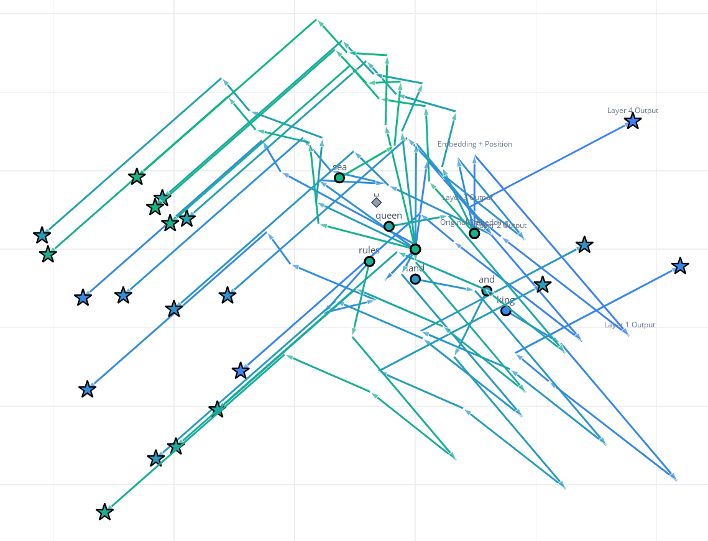
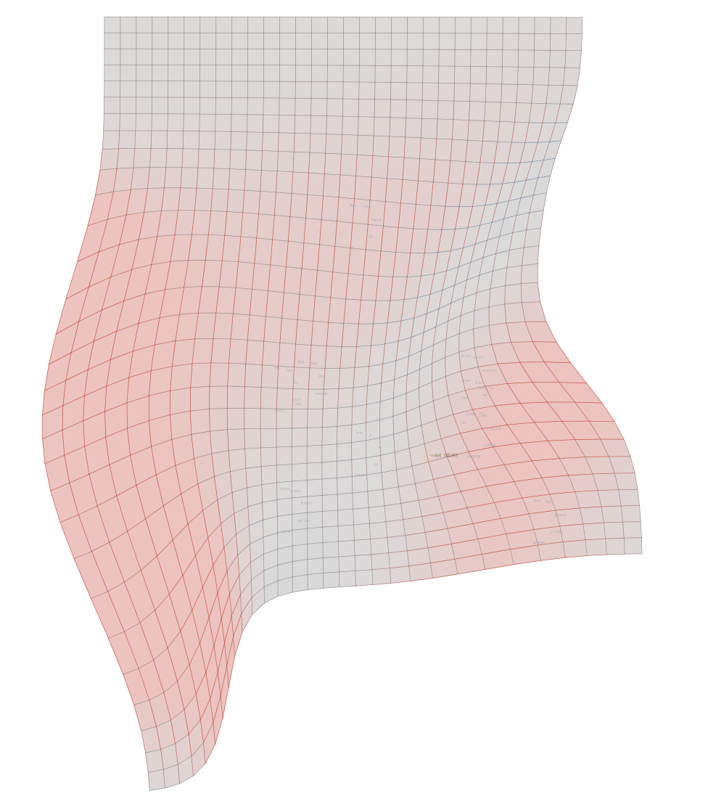
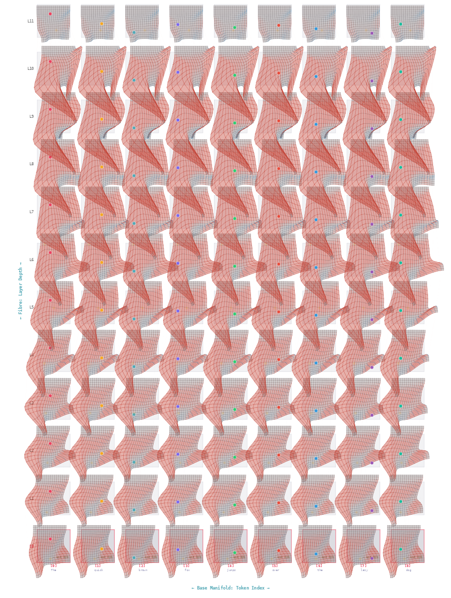

A visual, interactive journey into a geometric theory of how AI language models think.
The AI doesn't move words through space. It bends space itself — and the information is stored in the bending.
Press → or scroll to continue. Press [F] for fullscreen.
You already know that LLMs represent words as points in a high-dimensional space — the embedding space.
Words with similar meanings end up close together. "King" is near "Queen". "Cat" is near "Dog". "Banana" is far from "Monarchy".
Think of the embedding space as the lowest-resolution photograph of everything the AI has ever read.
It's blurry — all concepts compressed into one space — but it captures the rough shape of human knowledge.
The question is: what happens next? How does the AI go from this blurry map to generating precise, coherent text?
The usual explanation says: each word is a point (vector), and each layer of the neural network moves that point to a better position.

This is operationally correct — but it hides a deeper story.
What if the AI doesn't move the points — it bends the space the points live in?
🏓 Old View
Push a ball across a flat table
🌍 New View
Warp the table — the ball rolls on its own
This is exactly what Einstein did with gravity: instead of "a force pulls objects", he said "mass bends space, and objects follow the curves."
The AI's layers don't push tokens around. They deform the geometry of meaning-space, and the tokens follow the new shape.
Topology is the branch of mathematics that studies shapes — but it throws away distances. It only cares about what's connected to what.
The famous example: a coffee mug and a donut (torus) are topologically the same, because you can smoothly deform one into the other without cutting or gluing.
Drag the slider to smoothly deform a coffee mug into a donut. Click & drag the shape to rotate it freely.
The surface is a single continuous 3D mesh — no cuts, no jumps.
Both shapes have exactly one hole (genus 1). The mesh deforms continuously — every intermediate shape is valid. Drag to rotate freely.
Why does this matter for AI? Because the AI's computations are topological — they care about the shape of relationships, not exact distances.
Here's the key insight: in the AI, each layer deforms space. And the information is stored in the deformation itself.
Imagine you have a flat rubber sheet with a grid drawn on it. Now stretch, compress, and twist different parts of it:

The blue regions are where the AI is "making a decision" — compressing multiple possibilities into one. The red regions are where it's "opening up options."
In topology, one of the simplest but most powerful ideas is the winding number: how many times does a path loop around a point?
A path that goes around once counterclockwise has winding number +1. Twice = +2. Clockwise = negative numbers. Not at all = 0.
Click buttons to see different winding numbers on a circle:
n = 0: The constant loop (stay put)
Why does this matter? Because in the AI, information is encoded in how paths wind through the deformed space. Different winding = different meaning.
A loop is a path that starts and ends at the same point. The collection of all possible loops from a point is called the loop space.
Click to add loops. Each loop is a different "thought" the AI could have:
The pink dot is the "base point" — where every loop starts and ends. Each colored path is a different loop.
In the AI, these loops represent patterns of deformation that encode information. Two loops that can be smoothly deformed into each other carry the same information — they're "topologically equivalent."
As data flows through the AI's layers, each layer bends space a little more. The sequence of bendings is like a wave propagating through the network.

The information isn't stored in any single layer — it's stored holographically in the wave pattern of all the deformations together.
In a normal photograph, each pixel stores one spot. Scratch a corner → that corner is gone forever.
In a hologram, every piece stores the whole image as a wave pattern. Scratch a corner → the whole image gets slightly blurrier, but nothing disappears.
Click tiles to "destroy" them. See the difference:
↓ Reconstructed ↓
↓ Reconstructed ↓
LLMs work like holograms. The concept "dog" isn't in neuron #42 — it's a wave pattern across all dimensions. Damage some → it gets fuzzier, but never fully disappears.
Remember: the embedding space is the "lowest resolution image" of all knowledge. So what happens when you give the AI a prompt?
Each zoom stage produces something that looks plausible. If the AI saw similar things during training, the generated detail is accurate. If not, it might hallucinate — generate confident-looking nonsense.
Hallucination = the AI zooms into a region of its map where it never had real data, and fills it in with "topologically plausible" patterns that happen to be wrong.
In math, a diffeomorphism is a perfectly smooth, reversible deformation. Like stretching a rubber sheet — every point maps to exactly one other point, and you can always undo it.
But neural networks use ReLU: $\text{ReLU}(x) = \max(0, x)$
See the problem at x = 0:
The "kink" at x=0 is a singularity — a point where the function isn't smooth.
At a singularity, multiple inputs map to the same output (everything negative → 0). This means you can't reverse the transformation. Information is lost.
So the AI's maps are NOT perfect diffeomorphisms. They're Lipschitz maps — "almost smooth, with controlled kinks."
A singularity is where multiple different inputs produce the same output. This breaks bijectivity (one-to-one mapping).
Move the input points and watch them collapse:
In the AI, these singularities are deliberate. They're how the network makes decisions — collapsing many possibilities into fewer ones. But they also mean the computation is fundamentally irreversible.
A Lipschitz map is a function that can stretch space, but only by a bounded amount. There's a maximum "stretching factor" — it can't rip space apart.
$|f(x) - f(y)| \leq K \cdot |x - y|$
No two points can get more than K times farther apart than they started.
The AI's layer maps are Lipschitz because:
This is the mathematical guarantee that the AI's computations are stable. Small changes in input → bounded changes in output. No infinite stretching allowed.
Here's the full picture of how an LLM works geometrically:
Now we can explain hallucinations geometrically:
● Green = regions with training data (reliable zoom) ● Red = regions without data (hallucination zone)
The AI's deformation patterns are smooth — they naturally continue into regions where there was no training data. The generated detail looks plausible (topologically consistent) but may be completely wrong.
Hallucination = zooming into a blank area of the map and filling it with "what looks right" based on nearby patterns.
The geometry is there. We just need to learn to see it. 🔭